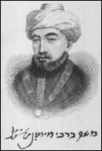
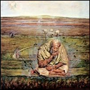
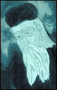
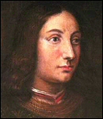
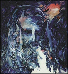
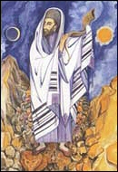

 Moses Maimonides (1135 - 1204)This Jewish philosopher, Talmudist and doctor was born in Cordoba in 1135. He left Spain during the persecutions instigated by the Almohads, travelling to Morocco and Egypt, where he became the doctor for the sultans. Both a disciple of Aristotle and inspired by the most authentic Jewish thought, he composed an encyclopaedic work and submitted the Aristotelian philosophy to the Biblical revelation in the Book of Knowledge (1168) and the Guide to the Perplexed (1190). He died in Cairo in 1204.
 Born in Saragossa in 1240, he developed the doctrine of the prophetic Kabbalah. His teaching is mainly based on the union with God through ecstasy, positions of the body, respiration and especially permutations of the letters of God's name. The disciple must concentrate on a specific letter of the Hebrew alphabet until he feels inspired by God. He died in Sicily in 1291. Moses de Leon (1240 - 1305)This Castilian Kabbalist was born in Leon in 1240. He developed a mystical doctrine of the soul based on the distinction between plant, animal and rational souls. His main themes are the nature of the soul, its state after death, the future world and the resurrection. He wrote the Sefer ha-Zohar, the Kabbalists' bible. He died in Arevalo in 1305.
 Giovanni Pico della Mirandola was the first Christian Kabbalist. From the age of 14, he studied law at the University of Bologna. Two years later, he embarked on a journey throughout Europe. By the age of 23, he spoke Latin, Greek, Arabic, Hebrew and Aramean. He wrote a comprehensive survey of philosophy and theology, called De omni re scibili, in which he exposed his intention to write a synthesis reuniting ideas that were culturally opposite and far removed from each other. He was persecuted for his ideas and sought refuge in Florence, where he dedicated the second part of his life to contemplation and devotion, until he succumbed to an illness at the age of 31 in 1494. Moses Cordovero, a Kabbalist and Rabbi of Safed, was born in 1522. After studying rabbinic literature under the guidance of Joseph Caro, he was initiated into the mysteries of the Kabbalah by his brother-in-law, Solomon Alkabiz, at the age of 20, and soon became a recognised authority on the subject. A deep thinker and highly versed in Judeo-Arab literature, Cordovero devoted his time to the strictly metaphysical speculative Kabbalah, preferring to keep his distance from the practical Kabbalah or the Kabbalah of miracles, which at the time was spread in Safed by Isaac Luria, whose circle of disciples he joined. He died in Safed on 25 June 1570. Nicknamed Saint Ari, the "Holy Lion", this Egyptian Kabbalist of German or Polish descent was born in Jerusalem in 1534. He lost his father at the age of eight and was raised by his mother, with whom he stayed until her dying day. He was late settling in Safed, but once there wielded considerable influence. He was the dominant figure of the theosophical Kabbalah after the expulsion of the Jews from Spain (1492) and is indirectly the author of an immense work, which gradually took hold as the most accomplished version of the Jewish esoteric doctrine. He died in Safed in 1572. |